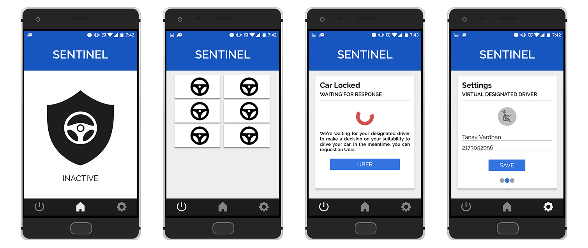

Introduction
At WildHacks 2016, my team built a mobile application to prevent drunk driving. My contribution to the team was designing the UI and implementing the web-based PHP backend. We were keen on exploring integration with vehicles, but weren't successful in our implementation, and eventually had to discard that aspect of our project.
Workflow
- The application's home page serves as a toggle for the lock on the vehicle. If the user anticipates that he/she may not be in a condition to drive at some point, they can turn the Sentinel switch on.
- Once the the Sentinel is on, the user must solve a memory puzzle to turn the switch off. If the user fails or the puzzle times out, the vehicle is locked.
- The application then contacts the user's "virtual designated driver", who is set by the user in the user settings screen. This virtual designated driver will then determine if the user is in a position to decide, and can unlock the car via text (using the Twilio API) for them.